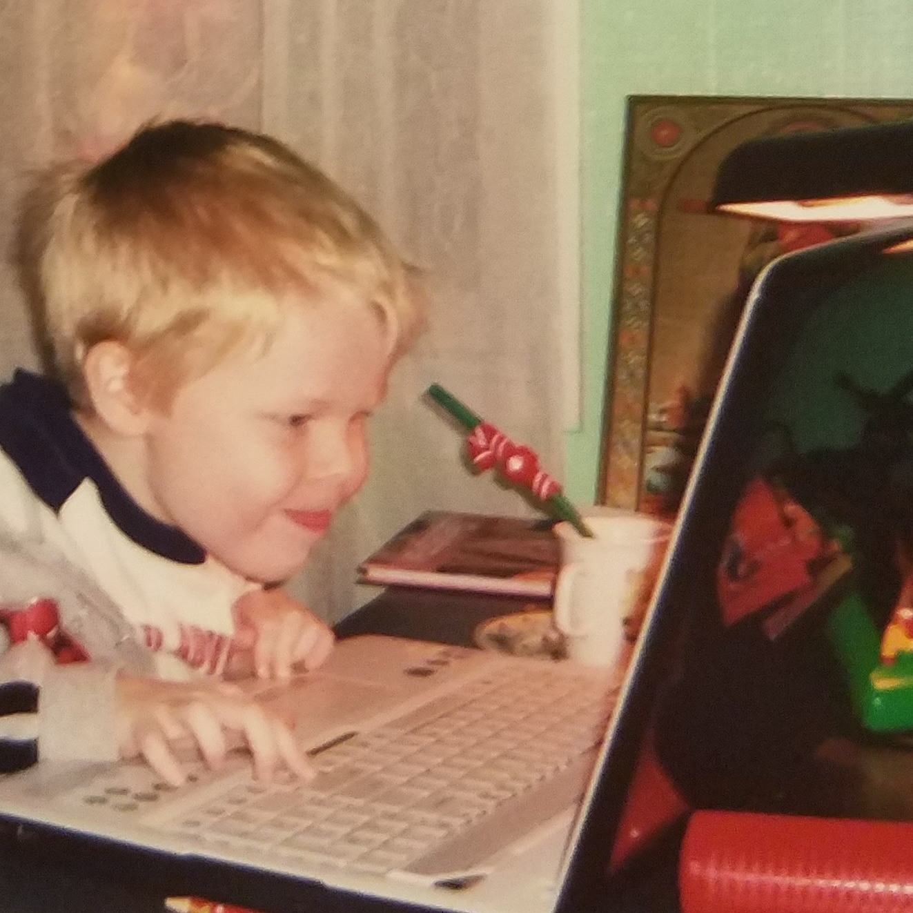
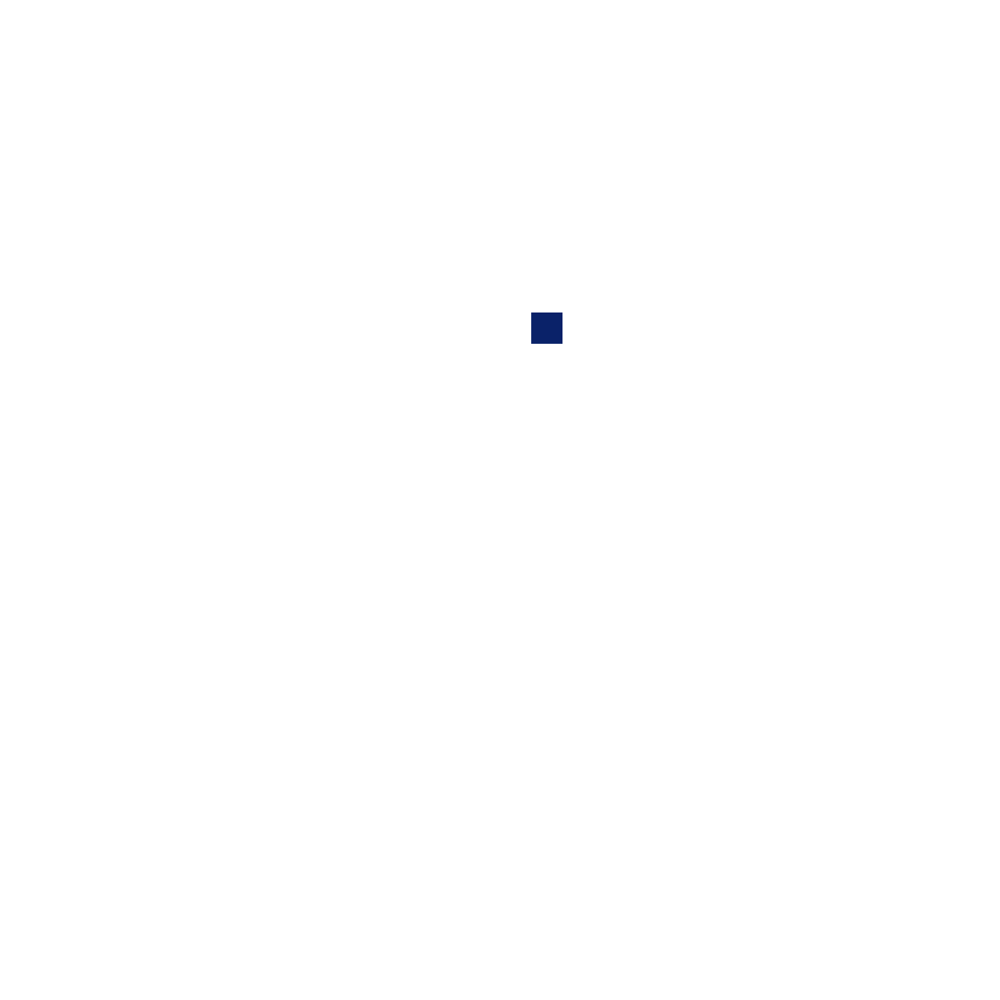

Nice to meet you!
I'm Michael — passionate self-guided programmer, student leader,
dedicated community volunteer, bilingual speaker, and amateur chess and soccer player. My main goal is to bring STEM activities
to Northeastern Pennsylvania.
My Programming Story
I started programming at the age of 10 on Scratch. Since then I have learned object-oriented
programming (Java, C#, Kotlin, and Python), database management (SQL), and digital design (Unity, XML, HTML, CSS, and Javascript).
My current focus is exploring the field of robotics through ROS2, perception, and machine learning.


Academics
I am currently studying computer science with a concentration in machine learning and devices
as an undergraduate at the Georgia Institute of Technology. Previously, I have I recieved my high school diploma from
Abington Heights High School in Clarks Summit, PA. While there, I took three years of computer science courses learning
Java, Kotlin, XML, and Android-app making and became the Class of 2021 valedictorian. My senior year I was a TA for
an Android course.
Coding Clubs
Besides the many side-projects I work on for experimenting with coding languages and competing in
competitions found in my Programming Portfolio, I am a member and/or leader of
many coding-based organizations. At Georgia Tech, I am a current software member of the RoboJackets,
Marine Robotics, and VGDev clubs.
During my high school career, I was president and co-founder of one of the largest clubs in the school,
Software Club, which brought
together programming, art, and engineering students to apply their knowledge practically to large creative and community
computer science projects.
